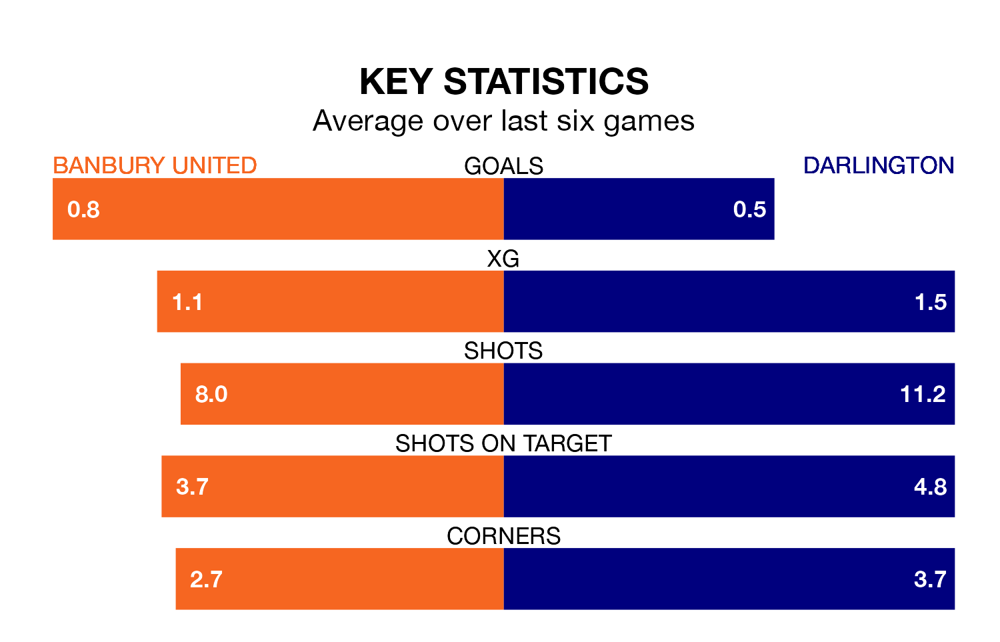

Banbury United and Darlington will both be looking for points in Tuesday's late kick-off at the Banbury Plant Hire Community Stadium to end their losing streaks.
The two teams have both gone three National League North games without a win. Banbury have picked up just four points from their last six games, while Darlington have earned five.
Darlington are 23rd in the table after 28 games, of which they have won six and drawn seven, earning 25 points.
Banbury are five places ahead of the away side in 18th, with nine wins and six draws putting them on 33 points.
Over the last two years, Banbury and Darlington have played each other twice. Banbury won one of them and they drew the other.
Their last meeting was on March 28, when they played out a 0-0 draw.
With 21 goals in 28 games so far this season, Darlington are the league's lowest scorers with 0.8 goals per game. And they are conceding more than average, letting in 51 goals at a rate of 1.8 per game.
United are also below average scorers, with 0.9 goals per game, compared to a league average of 1.3. They have conceded 1.5 goals per game.
Banbury's last match was on December 26, a 1-0 loss against Brackley Town.
Darlington lost 2-0 against Southport last time out, on January 9.
Updated: 10:03 (UTC), 30/01/24